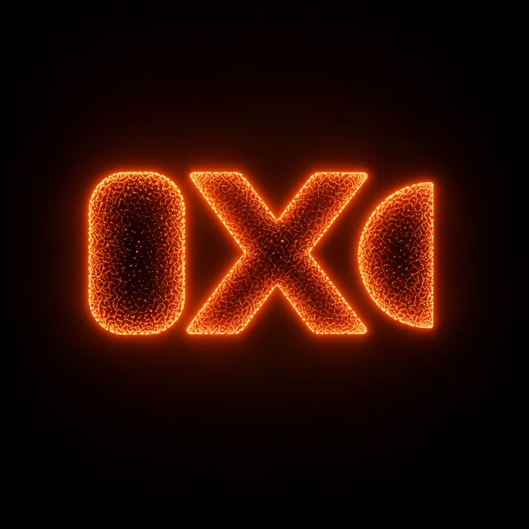

Native by default
Built on Apple’s MLX framework. Unified memory, Metal acceleration, and a workflow tuned for M-series machines.
MLX-LM-LoRA puts serious language-model adaptation on your Mac. Fast, private, and built for the silicon under your desk.

Also being used by researchers, engineers, and other professionals at Apple, IBM, Bosch, Red Hat, Hugging Face, Daimler Truck, and Mercedes-Benz Group.
A focused training stack for people who want to adapt models locally—without turning every experiment into a distributed-systems project. MLX-LM-LoRA is the code. MLX-LoRA-Studio is the calm, visual layer on top. The JOSIE model family is a production, very high-intelligence model family trained on MLX-LM-LoRA. Learn more about JOSIE ↗
Everything you need to move from dataset to adapter, with the defaults and visibility to understand what is happening.
Built on Apple’s MLX framework. Unified memory, Metal acceleration, and a workflow tuned for M-series machines.
Low-rank adaptation with explicit configuration, checkpoints, evaluation hooks, and reproducible command-line runs.
Launch and monitor jobs through MLX-LoRA-Studio: a native interface for datasets, hyperparameters, logs, and exports.
Choose from 12+ training algorithms in one local package—the first and only training package in its class to bring this breadth together. Each algorithm includes advanced features and deep customization for the job at hand.
Install the toolkit, point it at a compatible model and dataset, then keep the whole loop on your machine.
View document ↓